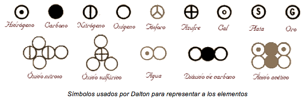
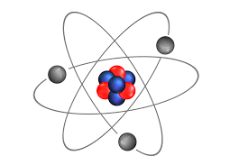

EL ÁTOMO
¿Qué es el átomo?
Un átomo es la unidad más pequeña de materia que conserva todas las propiedades químicas de un elemento. La palabra átomo proviene del griego antiguo (átomon, “sin división”) y fue acuñada por los primeros filósofos en teorizar sobre la composición de las cosas, es decir, las partículas elementales del universo.
.png) El átomo puede intervenir en una combinación química a lo largo de la historia, el ser humano, en su afán por comprender el mundo que le rodea, ha lanzado multitud
de teoría e hipótesis para explicar su estructura y características.
El átomo puede intervenir en una combinación química a lo largo de la historia, el ser humano, en su afán por comprender el mundo que le rodea, ha lanzado multitud
de teoría e hipótesis para explicar su estructura y características.
Por un lado, el núcleo está compuesto a su vez por neutrones, con carga neutra, y protones, con carga positiva. Ambos se encuentran agrupados en el núcleo y forman los nucleones. Y, por otro lado, la corteza se compone por electrones, con carga negativa.
Historia
EEl conocimiento del átomo, como todo conocimiento científico, nace de la curiosidad del hombre por comprender lo que le rodea en su naturaleza y en su funcionamiento. Por explicarse los fenómenos naturales. Los filósofos griegos discutieron mucho sobre la naturaleza de la materia y concluyeron que el mundo debía ser más sencillo de lo que parecía. En el siglo V a.C. Leucipo sostenía que todas las formas de materia debían estar constituidas por un mismo tipo de elemento que adoptaba formas diferentes. Sostenía, además, que si dividíamos la materia en partes cada vez más pequeñas, acabaríamos encontrando una porción que no se podría seguir dividiendo. Un discípulo suyo, aunque hay quien piensa que podrían ser el mismo, Demócrito, bautizó a estas partes indivisibles e infinitas de materia con el nombre de átomos, término que en griego significa “que no se puede dividir”, y que siempre estarían en movimiento y rodeadas de vacío.

Unos años más tarde Empédocles (siglo IV a.C.) estableció que la materia estaba formada por 4 elementos: tierra, agua, aire y fuego. Aristóteles (siglo III a.C.)agregó el “éter” como quintaesencia, negó la existencia de los átomos de Demócrito y reconoció la teoría de los 4 elementos, la cual, gracias a su prestigio y al posterior de Platón , se mantuvo vigente en el pensamiento de la humanidad, perdurando a través de la Edad Media y el Renacimiento. Hoy sabemos que aquellos 4 elementos iniciales no forman parte de los 106 elementos químicos actuales. En 1808, John Dalton publicó su teoría atómica, que retomaba las antiguas ideas de Leucipo y Demócrito. Según la teoría de Dalton:
1. Los elementos están formados por partículas discretas, diminutas e indivisibles, llamadas átomos, que no se alteran en los cambios químicos.
2. Los átomos de un mismo elemento son todos iguales entre sí en masa, tamaño y en el resto de las propiedades físicas o químicas. Por el contrario, los átomos de elementos diferentes tienen distinta masa y propiedades.
3. Los compuestos se forman por la unión de átomos de los correspondientes elementos según una relación numérica sencilla y constante. Por ejemplo, el agua está formada por 2 átomos del elemento hidrógeno y 1 átomo del elemento oxígeno.

Hoy sabemos que ninguno de estos tres puntos es completamente cierto; sin embargo, Dalton contribuyó enormemente a entender cómo estaba formada la materia.
Cronología
1808: John Dalton, Durante el s.XVIII y principios del XIX algunos científicos habían investigado distintos aspectos de las reacciones químicas, obteniendo las llamadas leyes clásicas de la Química.
Dalton en su teoría atómica, para explicar estas leyes, es la de minúsculas partículas esféricas, indivisibles e inmutables, iguales entre sí en cada elemento químico.
1897: J.J. Thomson, Demostró que dentro de los átomos hay unas partículas diminutas, con carga eléctrica negativa, a las que se llamó electrones.
De este descubrimiento dedujo que el átomo debía de ser una esfera de materia cargada positivamente, en cuyo interior estaban incrustados los electrones.

1911: E. Rutherford, Demostró que los átomos no eran macizos, como se creía, sino que están vacíos en su mayor parte y en su centro hay un diminuto núcleo.
Dedujo que el átomo debía estar formado por una corteza con los electrones girando alrededor de un núcleo central cargado positivamente.
1913: Niels Bohr, Espectros atómicos discontinuos originados por la radiación emitida por los átomos excitados de los elementos en estado gaseoso.
Propuso un nuevo modelo atómico, según el cual los electrones giran alrededor del núcleo en unos niveles bien definidos.
1925 - actualidad: Es el modelo actual; fue expuesto por Heisenberg y Schrödinger.
Partes del átomo

Los electrones orbitan el núcleo del átomo en una órbita con un radio de unas 10,000 veces el tamaño del núcleo formando lo que se conoce como la nube de electrones. Estos son atraídos a los protones del núcleo por la fuerza electromagnética que atrapa a los electrones en un “pozo de potencial” electrostático alrededor del núcleo.
.png)
Características del átomo
En química, los átomos son las unidades básicas y suelen conservar sus propiedades originales en cada reacción. Ni se destruyen ni se crean nuevas tan sólo se organizan de forma diferente creando distintos enlaces entre unos y otros. Los átomos se agrupan dando lugar a moléculas y otro tipo de materiales. Los enlaces que se crean en las reacciones químicas tienen una determinada composición que hace que se diferencien los diferentes elementos químicos. Estos elementos son los que aparecen en la tabla periódica.
Modelos atómicos
PARA SABER MÁS SOBRE EL ÁTOMO
Explicación del átomo
Sobre el átomo
Átomo
PRUEBAS SOBRE EL ÁTOMO
EVALUACION ÁTOMO
QUIZ SOBRE EL ÁTOMO
MÁS VIDEOS SOBRE EL ÁTOMO
MODELOS ATOMICOS
ESTRUCTURA
ÁTOMO